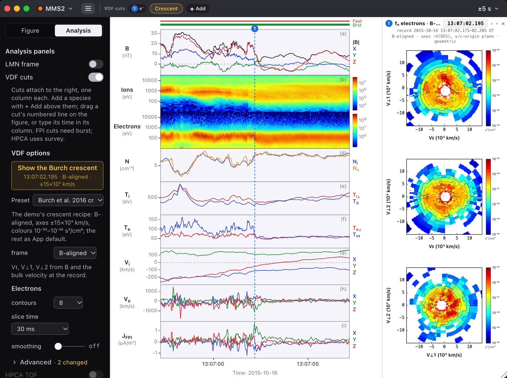

Inside an electron diffusion region
At 13:07 UT on October 16th, 2015, MMS flew through the electron diffusion region of a magnetic reconnection site along the dayside magnetopause (Burch et al. 2016). Test how Helios displays this event below:
Open a data window
Click any MMS, THEMIS or Cluster spacecraft on the HSO screen, or 1–4 for all four MMS side by side.
Use the tools
☰ opens Figure, for the subplots and corrections, and Analysis, for an LMN frame, VDF cuts and boundary layers.
Change the scale
Drag the view to turn it, step out from LEO to the Moon, L1 and the Sun, and advance the time bar.
Read the data
Hover over a panel for values, drag the sides to zoom and double-click to go back.

A workspace keeps an event's windows together on one clock: an overview strip with its focus window, the HSO view and the data.
HSOClick any spacecraft for data
closedopen · IGRF + T89, Kp 2
Click MMS to open its data
Loading MMS1 data…
The HSO and Workspace screens
In Helios, every spacecraft in the fleet opens a panel with that mission's observations (magnetic field, plasma moments and more), which can then be analyzed further with advanced tools and techniques.
Data. MMS Science Data Center, Level 2: FGM survey and burst (v4.18), FPI fast and burst moments (v3.4, v3.3), MEC ephemeris (v2.0). Survey fields are shown as one-second averages. Solar wind: OMNI 1-minute data (NASA SPDF, CDAWeb), already shifted to the bow shock's nose.
Magnetosphere. Drawn as Helios draws its Magnetosphere view. The magnetopause is Lin et al. (2010) with the Petrinec & Russell (1996) tail, and the bow shock is Jelínek et al. (2012), opening into a Mach cone down the tail. Both follow OMNI's solar wind minute by minute and the dipole tilt of the moment, turned for the wind's aberration. A gap in OMNI takes the nearest good minute up to 30 minutes away, as in Helios. The faint dashed lines are the magnetopause one and two hours earlier. At 13:07 MMS1 is 0.15 RE outside the drawn magnetopause.
Data windows. Clicking MMS on the HSO screen opens its data window: 540 by 752 points, ±30 minutes around the event. A window opened while the time bar is away from 13:07 is pinned to that moment. The ☰ button opens the app's tools sidebar. Its Figure tab holds the coverage bar and tracker, preset figures, the subplot options and the figure corrections: FPI's spin-tone correction of Ve (on by default, as in Helios), Helios's outlier filter and boxcar smoothing. Its Analysis tab opens the side panels and paints boundary layers on the figure. The demo carries one probe of each other mission, so any THEMIS probe opens THEMIS-A and any Cluster probe opens Cluster 4: THEMIS L2 FGM, ESA and EFI from UC Berkeley via CDAWeb, with Helios's ESA energy tables; Cluster 4's FGM, CIS-CODIF H⁺ and PEACE prime parameters and CODIF spectra from CDAWeb, and PEACE's pitch-angle spectra from ESA's Cluster Science Archive.
LMN frame. The LMN frame switch opens Helios's workbench with its one-spacecraft method, MVA-B (Sonnerup & Cahill 1967). Drag the black handles on B or type the interval, and Apply LMN turns every vector in the window into L, M, and N. As in the app, the panel reports λ2/λ3 and λ1/λ2, the normal's error cone (Sonnerup & Scheible 1998) and how far each axis moves over seven intervals from half to twice the interval chosen (Denton et al. 2018).
Electron distributions. VDF cuts draws MMS2's and MMS3's FPI-DES burst distributions from 13:07:01.0 to 03.5 UT (via CDAWeb). Each 30 ms record is cut geometrically, every instrument bin painted over its own footprint, on a 100 × 100 grid over ±25 × 103 km/s. The plane passes through the spacecraft-frame origin with the axes shifted by the electrons' bulk velocity, and the colors run from 10−31 to 10−25 s3/cm6 with eight contours. + Add places a cut and its numbered line on the figure. The VDF options set the frame (the instrument's DBCS, or LMN once a frame is applied, GSE, GSM or B-aligned), the slice time, the smoothing and the axes. For GSE and GSM the demo turns DBCS by the rotation FGM's DMPA and GSE data give (under 4°), where Helios reads the MEC attitude. The Crescent button, beside + Add and in the VDF options, sets up the perpendicular crescent Burch et al. (2016) describe.
The other scales. LEO, Moon, L1 and Sun work as in Helios's rungs. LEO shows the Earth-fixed globe at 13:07 with the all-sky imagers running that day (Helios's site list; filled where the Sun was more than 10° below the horizon) and the Starkov (1994) oval at Kp 1.7. Moon and L1 keep the same scene with the Moon, ARTEMIS and the L1 monitors, and the solar wind's travel time from each monitor to the bow shock. Sun shows the inner planets (JPL's ephemerides through astropy), MAVEN at Mars from Helios's cache, and the Sun as Helios builds it: a sphere turned to the Sun's rotation axis, its near side from SDO/AIA's 193 Å image of 13:07 and its far side from six images of the rotation before, back to 19 September, carried forward by differential rotation (Howard et al. 1990), with the corona the image shows off the limb. The images come through Helioviewer, and the Sun is drawn 15 times its true size, as in Helios.
Spacecraft. The orbits and positions are Helios's own cached ephemeris for the event: MMS from the MMS Science Data Center, and THEMIS, Cluster, the Van Allen Probes, Geotail, SDO, the Moon, ARTEMIS and the L1 monitors from SSCWeb. MMS's orbit is drawn for one period, perigee to perigee. The stars are the Yale Bright Star Catalogue in the direction the view looks.
Field topology. IGRF plus T89 at Kp 2 (Tsyganenko 1989) for 13:07 UT, with that moment's dipole tilt, traced by Helios's own field-line tracer from footpoints every two hours of magnetic local time between 60° and 82° magnetic latitude in both hemispheres. Each line is colored by whether it closes or runs open into the lobes, and cut where it leaves the magnetopause. T89 is a statistical model sorted by Kp, so this is the average shape of the field for conditions like these, not the field that day. It is the demo's own for now, not yet in Helios: turn it on from the HSO view's View menu.
Reference. Burch, J. L., et al. (2016), Electron-scale measurements of magnetic reconnection in space, Science, 352, aaf2939.